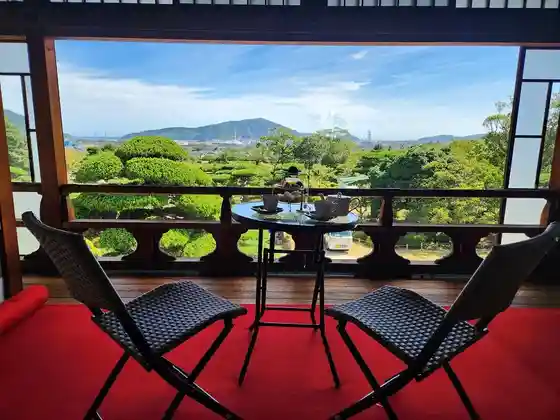
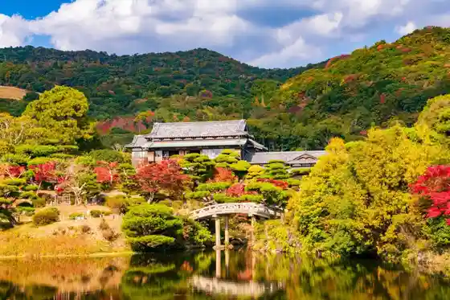
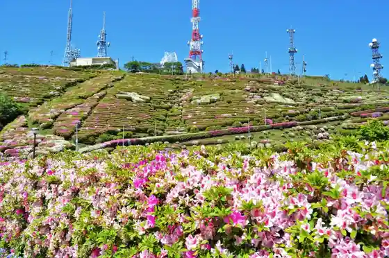
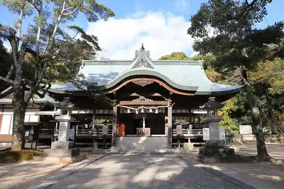

Hofu Tenmangu Shrine
Hofu, Yamaguchi · 0835-23-7700 · Official / source link
Wayosetchu ! Kyu Mori Kahon Tei De Ajiwa U Afutanunteii
Hofu, Yamaguchi · 0835-25-2148 · Official / source link

Mori Shi Garden Mori Museum
Hofu, Yamaguchi · 0835-22-0001 · Official / source link

Ohira Yamayama Itadaki Park
Hofu, Yamaguchi · 0835-38-0762 · Official / source link

Tamanoya Shrine
Hofu, Yamaguchi · 0835-21-3915 · Official / source link

Udagagaku
Hofu, Yamaguchi · 0835-25-4547 · Official / source link
Hofu Seishonen Science Museum Soraru
Hofu, Yamaguchi · 0835-26-5050 · Official / source link
Hofu Tourist Information Machi no Eki Umeterasu / Rentasaikuru
Hofu, Yamaguchi · 0835-23-4175 · Official / source link
Roadside Station Shio Sai Market Hofu
Hofu, Yamaguchi · 0835-28-2100 · Official / source link
Todaiji Betsuin Amida Tera
Hofu, Yamaguchi · 0835-38-0839 · Official / source link
Kochi Zu Wo Katate Nimachiwo Aruko U (Miya City Hen) Yasashii Kosu Ari
Hofu, Yamaguchi · 090-7128-6568 · Official / source link
Kochi Zu Wo Katate Nimachiwo Aruko U (Tonomi Hen)
Hofu, Yamaguchi · 0835-38-3210 · Official / source link
Suo Kokubunji
Hofu, Yamaguchi · 0835-22-0996 · Official / source link
Tonomi Beach
Hofu, Yamaguchi · 0835-25-2148 · Official / source link
Kochi Zu Wo Katate Nimachiwo Aruko U (Mitajiri Hen)
Hofu, Yamaguchi · 090-7128-6568 · Official / source link
Amida Tera Ishiburo (Kodai Sauna) Experience Shinshin Toto no U 900 Nenmae no Nekki Yoku
Hofu, Yamaguchi · 0835-25-2148 · Official / source link
Gyoten Ro 2 Kai (Tokubetsu Kokai) to Yoshimatsu Iori no Matcha Experience
Hofu, Yamaguchi · 0835-25-2148 · Official / source link
Kochi Zu Wo Katate Ni, Machiwo Aruko U Kikangentei Kaido Uoku Kyu Sanyodo Hofu
Hofu, Yamaguchi · 090-7128-6568 · Official / source link
Mitajiri Ocha Ya (Ei Kumo So)
Hofu, Yamaguchi · 0835-23-7276 · Official / source link
Kochi Zu Wo Katate Nimachiwo Aruko U (Kuwayama Hen)
Hofu, Yamaguchi · 090-7128-6568 · Official / source link
Hofu Machi no Eki
Hofu, Yamaguchi · 0835-28-0500 · Official / source link
Suo Kokuga Ato
Hofu, Yamaguchi · 0835-25-2237 · Official / source link
Suo Kokubunji De Nenju Zukuri Experience Juyo Bunkazai (Kondo) Haikan
Hofu, Yamaguchi · 0835-25-2148 · Official / source link
Hofu Tenmangu Shrine Shinshoku Niyoru Keidai Tokubetsu Annai to Rekishikan De no Matsuzaki Tenjin Engi Emaki (Fukusei) Nifureru Experience
Hofu, Yamaguchi · 0835-25-2148 · Official / source link
Yuyu Plaza (Sawa Kawa Migigishi Kasenjiki Tamokuteki Plaza)
Hofu, Yamaguchi · 0835-25-2429 · Official / source link
Sawa Kawa
Hofu, Yamaguchi · 0835-22-1427 · Official / source link
O Warai Ko Senshukentaikai (Mogi Experience) Hofu no Dento Shinji (Warai Ko) Ga Motsu (Warai) no Miryoku Wo Tsutae Masu
Hofu, Yamaguchi · 0835-25-2148 · Official / source link
Kyu Mori Kahon Tei Hikokai Eria Tokubetsu Annai
Hofu, Yamaguchi · 0835-25-2148 · Official / source link
Ei Kumo So De Hiwada Fuki Kosuta Tsukuri Experience Ei Kumo So Ya Yamaguchi City Ruri Mitsudera Goju to no Yane no Hiwada Fuki (Hiwadabuki) Dento Sozai Wo Katsuyo
Hofu, Yamaguchi · 0835-25-2148 · Official / source link
(Tezu Kuri Imono Taiken) Hofu no Imono Chuzo no Rekishi Ni Fure Yo !
Hofu, Yamaguchi · 0835-25-2148 · Official / source link
Rekishi Butai : Ei Kumo So De Wabun Katai Ken (Heian Shozoku Experience Wagashi Tsukuri Experience Purasu Matcha) Wa Wo Tanoshi Mu Taikan Suru
Hofu, Yamaguchi · 0835-25-2148 · Official / source link
Hajimete no Joba Taiken ! 1 Nichi 1 Kumi Gentei ! Tokubetsu Puroguramu
Hofu, Yamaguchi · 0835-25-2148 · Official / source link
Kanko Kashikiri Takushiipuran Hofu Hayama Wari Kosu (Hofu no Ninki Kanko Supotto Womeguru)
Hofu, Yamaguchi · 0835-25-2148 · Official / source link
Ko Shima Sports Park
Hofu, Yamaguchi · 0835-23-3121 · Official / source link
Kasuga Shrine
Hofu, Yamaguchi · 0835-38-1185 · Official / source link
Rekishi to Zuan Cho Nifureru Kimono Ato Experience
Hofu, Yamaguchi · 0835-25-2148 · Official / source link
Boseki Tetsudo Jokikikansha
Hofu, Yamaguchi · 0835-25-2237 · Official / source link
Dairaku Tera
Hofu, Yamaguchi · 0835-22-3986 · Official / source link
Nichijo no Utsuwa Wo Tsukuru ! Yaki Mono (Tamanoya Kama) Experience
Hofu, Yamaguchi · 090-2860-8596 · Official / source link
Kuwayama Park
Hofu, Yamaguchi · 0835-25-2435 · Official / source link
Mitajiri Shioda Kinen Sangyo Park
Hofu, Yamaguchi · 0835-25-3510 · Official / source link
Shiawase Masu O Zen to Akari no Chiruautonaito
Hofu, Yamaguchi · 0835-25-2148 · Official / source link
Dainichi Burial Mound
Hofu, Yamaguchi · 0835-25-2237 · Official / source link
Kuni Historic Site (Ei Kumo So) no Yakan Tokubetsu Raitoappu & Sansaku Puran
Hofu, Yamaguchi · 0835-25-2148 · Official / source link
Usa Hachiman Shrine
Hofu, Yamaguchi · 0835-36-1154 · Official / source link
Te Burade OK! Furaipan De Tsukuru Tennen Shio Zukuri Experience
Hofu, Yamaguchi · 0835-25-2148 · Official / source link
Mizu no Hofu Wo Kanji Ru Dentoteki Shuzo Ri Kengaku Hofu Tenmangu Shrine Omiki no Genten Wo Tazune Ru ★ O Miyage Tsuki ★
Hofu, Yamaguchi · 0835-25-2148 · Official / source link
Tenjin Yama Park
Hofu, Yamaguchi · 0835-25-2435 · Official / source link
Tokubetsu Annai De Meguru (Shio Zukuri Taiken to Shuzo Ko Tokubetsu Kokai)
Hofu, Yamaguchi · 0835-25-2148 · Official / source link
Mitajiri Gyoshu Kura Ato
Hofu, Yamaguchi · 0835-25-2237 · Official / source link
Mebaru Park (Shinchiku Chi Town Bosai Plaza)
Hofu, Yamaguchi · 0835-25-2431 · Official / source link
Yamaguchi Imono Memorial Museum
Hofu, Yamaguchi · 0835-28-3702 · Official / source link
Aizen Me Wakushoppu to Ranchi & Suiitsu
Hofu, Yamaguchi · 0835-34-1212 · Official / source link
Mori Shi Teien De Yuga Na Teiitaimu ! Tokusei (Kamon Iri Makaron) to Kocha no Setto
Hofu, Yamaguchi · 0835-25-2148 · Official / source link
Hofu Tenmangu Shrine Ken Shitei Shiseki (Dai Sen Bo) Kashikiri Experience to Goten De Seishiki Sanpai
Hofu, Yamaguchi · 0835-25-2148 · Official / source link
Sogyo 120 Nen no Shuzo Detsukuru " Watashi Dake no Ippon " Experience
Hofu, Yamaguchi · 0835-25-2148 · Official / source link
Hagi Hanshu Yukari no (Ei Kumo So) De Rekishi Ni Hitaru Tokubetsu Chushoku (O Tonosama O Himesama Ranchi) Puran
Hofu, Yamaguchi · 0835-25-2148 · Official / source link
Kuni Historic Site (Ei Kumo So) no Yakan Tokubetsu Raitoappu & Sansaku Puran + Yushoku Tsuki
Hofu, Yamaguchi · 0835-25-2148 · Official / source link
Tentoku Tera
Hofu, Yamaguchi · 0835-22-2854 · Official / source link
Kajitori Moto Hiko Fusai no Haka
Hofu, Yamaguchi · 0835-25-4547 · Official / source link
Suo Kokubunji Kondo
Hofu, Yamaguchi · 0835-22-0996 · Official / source link
Hofu Kanko Boranteiagaido no Kai
Hofu, Yamaguchi · 090-7128-6568 · Official / source link
Santoka Furusato Kan
Hofu, Yamaguchi · 0835-28-3107 · Official / source link
Tokubetsu Kokai Shiroishi Ie House Kura Kengaku to, Wa no Dento “ Furoshiki Tsutsumi Experience ” ★ Furoshiki Tsuki ★
Hofu, Yamaguchi · 0835-25-2148 · Official / source link
(Hofu Keirinjo) Fudan Miru Koto no Dekinai Basho Wogo Annai Suru Bakkuyado Tour
Hofu, Yamaguchi · 0835-25-2148 · Official / source link
Hofu Kimono Taiken to Yoshimatsu Iori no Matcha Experience Kimono De Hofu Tenmangu Shrine Wo Sansaku ! Chashitsu De Matcha Taiken (Kinensatsuei Tsuki)
Hofu, Yamaguchi · 0835-25-2148 · Official / source link
Suo Kokubunji Deo Mamori Zukuri Taiken (Kigan Tsuki) Juyo Bunkazai (Kondo) Haikan
Hofu, Yamaguchi · 0835-25-2148 · Official / source link
Nojima
Hofu, Yamaguchi · 0835-34-1500 · Official / source link
Shiki Yama Castle Ruins
Hofu, Yamaguchi · 0835-25-4547 · Official / source link
Gokokuji
Hofu, Yamaguchi · 0835-22-3477 · Official / source link
Miya City Honjin Ani Bu Ie
Hofu, Yamaguchi · 0835-25-2237 · Official / source link
Ei Kumo So De (Miso Somurie) to “ Miso Zukuri Experience ” Nihondento Chomiryo no Honmo no Experience
Hofu, Yamaguchi · 0835-25-2148 · Official / source link
Masu Chiku Rankan Hashi
Hofu, Yamaguchi · 0835-25-2237 · Official / source link
Ko Shima Tanuki Seisokuchi
Hofu, Yamaguchi · 0835-25-2237 · Official / source link
no Village Bo Higashi Ama Shuen no Taku Ato Oyobi Haka
Hofu, Yamaguchi · 0835-25-2237 · Official / source link
Oimatsu Shrine
Hofu, Yamaguchi · 0835-22-0796 · Official / source link
Tentoku Tera no Icho
Hofu, Yamaguchi · 0835-22-2854 · Official / source link
Hofu Ko Shima no Kanzakura
Hofu, Yamaguchi · 0835-25-2237 · Official / source link
Ashi Sho Tera
Hofu, Yamaguchi · 0835-22-3042 · Official / source link
Taneta Santoka Seika Ato
Hofu, Yamaguchi · 0835-25-4547 · Official / source link
Hofu Meisho Wo Meguru Potaringu no Mbirito Jitensha Sanpo (Pinpointo Kanko Gaido, Kyotsu Chowari Haikan Ken Tsuki)
Hofu, Yamaguchi · 0835-25-2148 · Official / source link
Hofu Tourist Information
Hofu, Yamaguchi · 0835-23-4175 · Official / source link
Kurumazuka Burial Mound
Hofu, Yamaguchi · 0835-25-2237 · Official / source link
Ei Kumo So De Hiwada Fuki Kosuta Atofuremu Tsukuri Experience Ei Kumo So Ya Yamaguchi City Goju to no Yane no Hiwada Fuki (Hiwadabuki) Dento Sozai Wo Katsuyo
Hofu, Yamaguchi · 0835-25-2148 · Official / source link
Umigamie Ru (Hana no Sono) (Shinchiku Chi Ryokuchi)
Hofu, Yamaguchi · 0835-25-2435 · Official / source link
Dai Village no Sho no Heya (Asupirato)
Hofu, Yamaguchi · 0835-26-5151 · Official / source link
Iwa Hatake Burial Mound
Hofu, Yamaguchi · 0835-25-2237 · Official / source link
Ito Inoe Ryo Ko Joriku no Hi
Hofu, Yamaguchi · 0835-34-0034 · Official / source link
Yamatoya Masasuke no Funagura
Hofu, Yamaguchi · 0835-34-0034 · Official / source link
Minyo Hamako Uta
Hofu, Yamaguchi · 0835-25-2237 · Official / source link
Mukaiyama Sango Burial Mound
Hofu, Yamaguchi · 0835-25-2237 · Official / source link
Nishiura Ehimeayame Jisei Nangen Chitai
Hofu, Yamaguchi · 0835-25-2237 · Official / source link
Hofu Bunkazai Local History Museum
Hofu, Yamaguchi · 0835-25-2330 · Official / source link
Hagi Okan (Hofu)
Hofu, Yamaguchi · 0835-25-2237 · Official / source link
Mitajiri Hama Taikai Tokoro Ato
Hofu, Yamaguchi · 0835-25-2237 · Official / source link
Imono Shi Taishi Tsuka
Hofu, Yamaguchi · 0835-25-2237 · Official / source link
Hofu Nakaura no Ryokushoku Hengan
Hofu, Yamaguchi · 0835-29-0305 · Official / source link
Sumiyoshi Shrine no Sekizo Todai
Hofu, Yamaguchi · 0835-25-2237 · Official / source link
Kajitori Moto Hikozo Tajiri Oka Village Hontei
Hofu, Yamaguchi · 0835-25-4547 · Official / source link
Ko Haku Kawaragama Ato
Hofu, Yamaguchi · 0835-25-2237 · Official / source link
Hofu Yakusho
Hofu, Yamaguchi · 0835-23-2111 · Official / source link